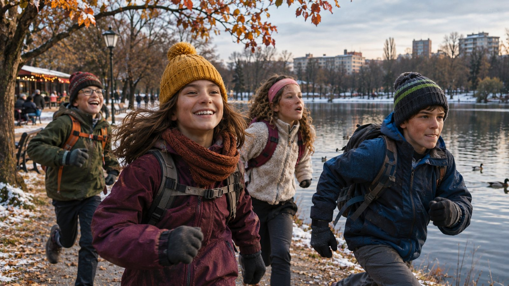

Предстоящо
Nikola's Run – Бягане с кауза
Борисова градина, езеро Ариана, гр. София
На 6 декември, една стара история ще оживее отново. Този път главните герои ще бъдат децата. Очакват ги около 2 км приключение, тайна мисия, загадки и изненади по трасето.
